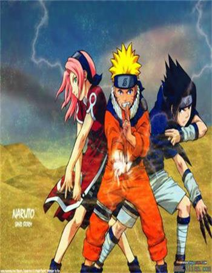

火影忍者
作品影响
| 国家或地区 |
发行量 |
统计截止时间 |
| 日本 |
1亿3128万册 |
2013年2月[11] |
| 美国 |
900万册 |
2011年 |
| 欧洲 |
1900万册 |
2011年 |
中国大陆 |
663万册 |
2009年 |
火影完结
不知不觉，《火影忍者》这个连载了十几年的漫画终于也要完结了，前不久该漫画的作者岸本齐史宣布这部长篇漫画即将完结的消息之后，引起了很多人的无限感慨，毕竟日本动漫史上能够连载这么多年并且影响力一直保持如此之久的漫画并不是那么多的。

向神话致敬 隐喻今世
岸本齐史创作的《火影忍者》并不仅止于向神话致敬，也有对照今世的隐喻。在故事中扮演反派主力的叛忍战斗集团“晓”，即是作者安排原本以抑制战争为己任的国际武力仲裁组织，如果以现代社会大众习惯的电影模式做比较，这个身怀绝技的密杀团体有点像神盾局筹组的复仇者联盟。
调停不成的“晓”，后来却为了召唤人们对和平的向往，采取足以毁天灭地的惊人破坏力，进而变调成了恐怖组织。知名漫画家川口开治笔下的《沉默的舰队》，一艘携带核弹头航向纽约联合国总部，企图扭转世界命运的核子潜舰，其本质与“晓”无疑是接近的。这也反映日本创作者在思考身为唯一的核爆伤害国时，内心潜在的矛盾情结。
《火影忍者》的人物丰富、性格鲜明，无论是宿命般的对决戏码，或是不时充满悲剧色彩的故事桥段，乃至处处回荡着温暖人性的情感对话，都让这部跨越不同世代的热血漫画深受粉丝喜爱。尤其以歌舞伎里的忍者兼义贼角色为原型的自来也，与主角鸣人之间的师徒情，更是让火影迷津津乐道。
岸本曾在受访时说，他刚开始画《火影》时还没结婚，随着组成家庭，心情也跟着有了转变，例如鸣人原本是无父无母的孤儿，后来他决定让主角也能体会一下与父母生活的感觉。
从这个角度看，读者是随著作者的心路历程一起成长。我的两个孩子当然也不例外，在宣告大结局的那一天，他们也从《火影》的忍者学校毕业了，想来这将是他们未来的共同记忆。